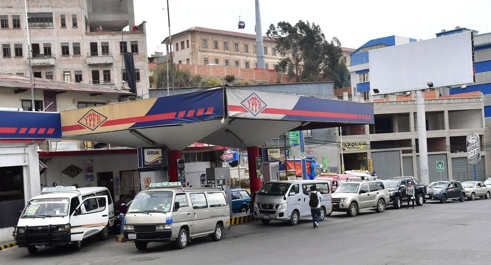
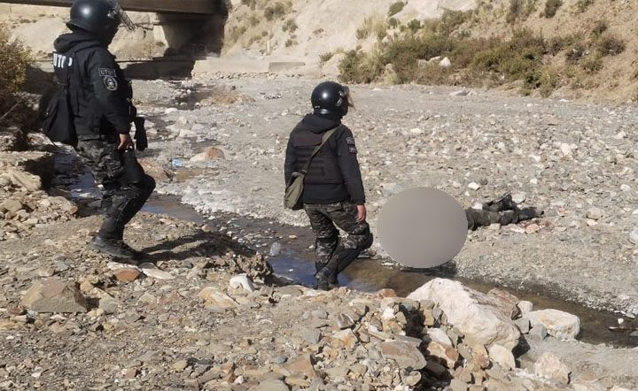
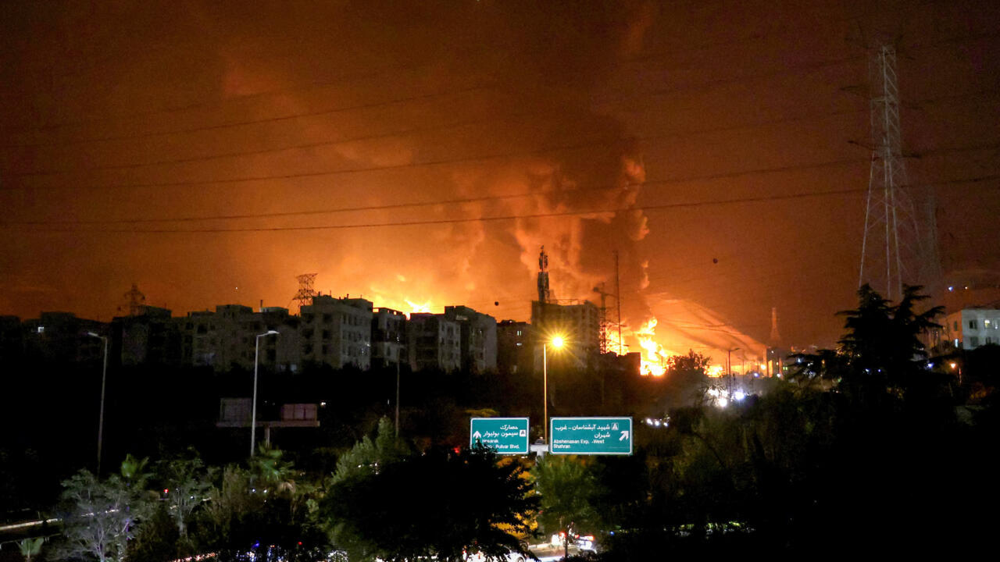

FALTA DE GASOLINA EN BOLIVIA
La escasez de combustibles volvió a poner a Bolivia al borde del colapso. Desde Cobija, en el norte amazónico, hasta Bermejo, en la frontera sur del país, los surtidores de gasolina y diésel están rodeados de vehículos de todos los tamaños que buscan aprovisionares haciendo filas que pueden durar horas y hasta días. La crisis empeoró después de que el presidente de la petrolera estatal, Armin Dorgathen, confesara que no tenía dinero para importar los combustibles necesarios para cubrir la mitad de la demanda habitual. El presidente Luis Arce aseguró que no renunciará y tomó diez medidas para enfrentar la situación que la oposición y los expertos han considerado insuficientes.
POLICIA MUERE EN EL BLOQUEO
Las movilizaciones sociales en Bolivia escalaron en violencia tras la muerte de cuatro policías y un civil en enfrentamientos ocurridos los dos últimos días para levantar los puntos de bloqueo. El miércoles, la Policía Boliviana fue prácticamente rebasada en la localidad minera de Llallagua, al norte de Potosí, donde los bloqueadores protestan por la exclusión del ex presidente Evo Morales (2006-2019) de las elecciones de agosto y exigen la renuncia del presidente Luis Arce, a quien responsabilizan por la crisis económica que atraviesa el país.
"No dejen que la hermosa Teherán se convierta en Gaza": los residentes en la capital de Irán relatan su conmoción mientras Trump llama a evacuar "inmediatamente" la ciudad
Todavía conmocionados por el repentino ataque de Israel a Irán en las primeras horas de la mañana del viernes, los residentes de Teherán hablan sobre el miedo, la confusión, el sentimiento de impotencia y las emociones encontradas que atraviesan. "Hace noches que no dormimos. Todo el mundo se va, pero yo no. Mi padre dice que es más honorable morir en tu propia casa que huir", me dice un estudiante de música, de 21 años, a través de una aplicación de redes sociales encriptada. Donya –una mujer que no quiere revelar su nombre real– es una de los muchos iraníes atrapados en una guerra entre un régimen que detestan e Israel, cuyo poder destructivo en Gaza ha visto esta mujer en su pantalla a la distancia.
Partidos de hoy, lunes 16 de junio de 2025
La jornada de este día está cargada con diversos encuentros en América, sobre todo del Mundial de Clubes con participación de Luis Advíncula Hoy lunes 16 de junio se llevarán a cabo varios partidos que serán de gran interés para el hincha del fútbol. Y es que el Mundial de Clubes seguirá con la jornada 1 por la fase de grupos, aunque también hay otros encuentros importantes a seguir. Conoce toda la programación.